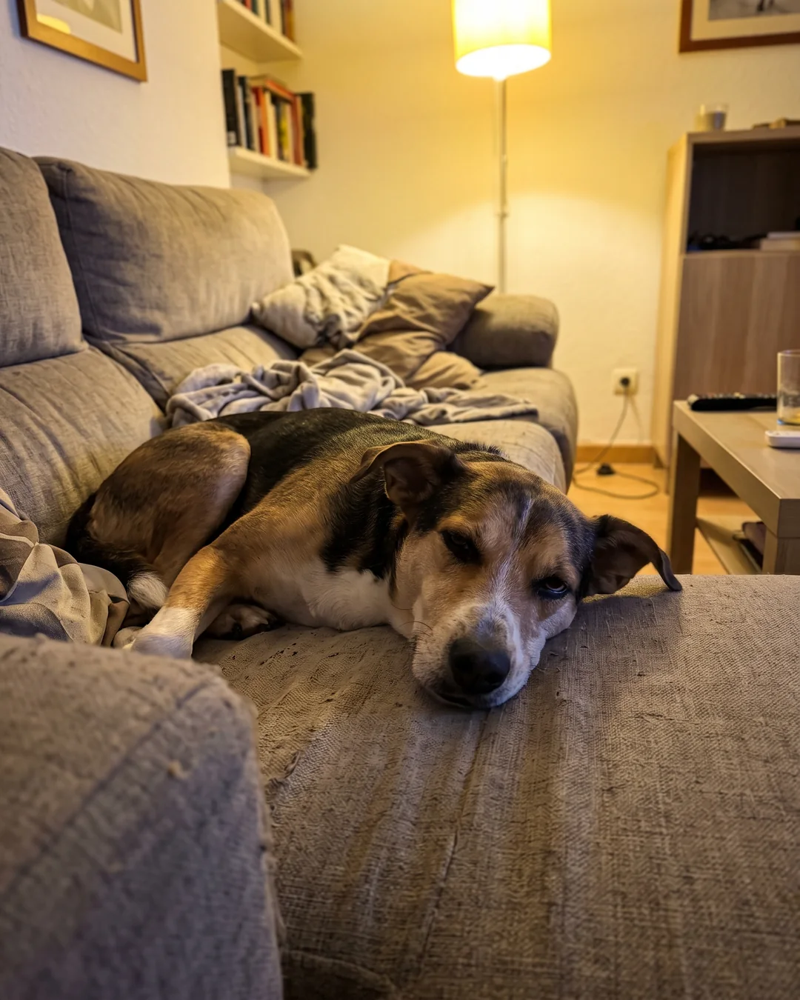
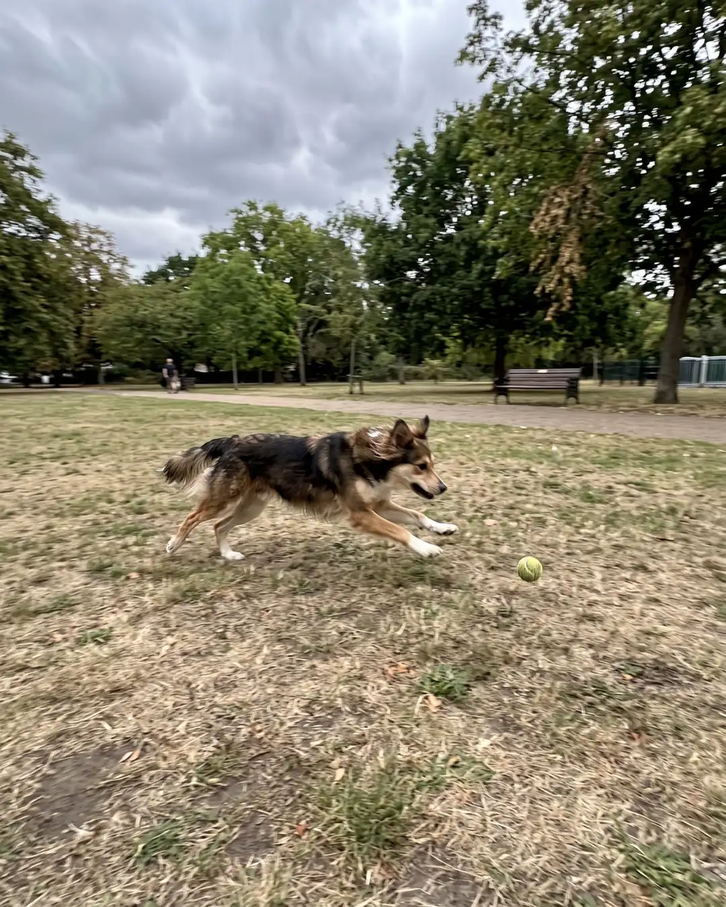
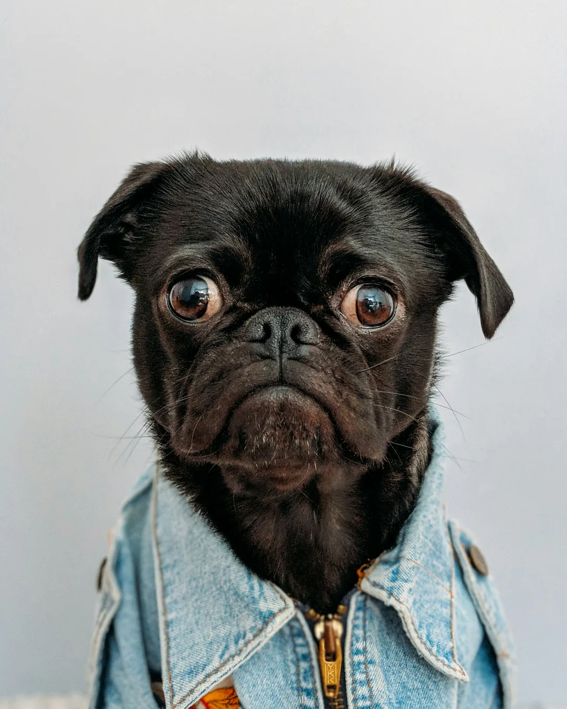

Case #2 · Dogs
Images
-
REAL
Real photograph
-

AI
The suspect's confession
A medium-sized mixed-breed dog lying on the couch in an ordinary living room, looking at the camera with a sleepy face; yellow lamp light.
-
REAL
Real photograph
-

AI
The suspect's confession
A dog running through a park with dry grass, chasing a ball; slightly blurry photo, overcast sky.
-

REAL
Real photograph
Fact or Fake
-
FAKE “Five dog breeds are physically unable to bark.”
The breed known for not barking is the basenji, of African origin.
- Because of the shape of its larynx, it almost never barks.
- It makes a sound similar to a yodel.
-
FAKE “A female dog holds the world record for popping 100 balloons in under 20 seconds.”
The fastest Guinness record belongs to a dog named Toby, who popped them in 28.22 seconds in 2017.
- The previous holder was Twinkie, a Jack Russell, with 39.08 seconds.
-
FAKE “The world's largest dog stood more than 3 m (10 ft) tall on its hind legs.”
The Guinness record for the tallest dog belongs to Zeus, a Great Dane from Michigan, USA.
- He stood 1.11 m (3.6 ft) at the shoulder.
- He measured about 2.23 m (7.3 ft) on his hind legs.
-
FAKE “More than 500 dog breeds are officially recognized.”
The Fédération Cynologique Internationale, the world's largest canine body, recognizes about 350 breeds.
- The American Kennel Club in the U.S. recognizes about 200.
-
FACT “The Beatles put a sound on a record that only dogs can hear.”
The end of Sgt. Pepper's Lonely Hearts Club Band (1967) has a very high tone that people can barely hear.
- It was included as a joke for the dogs of anyone listening.